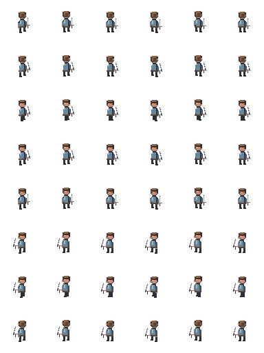

Search the Art Bible
Search works locally, including offline.
Art Bible · Characters
Animation production and frame viewer
Aseprite timelines, genuine directional poses and explicit timing metadata.
Edition 0.1.0 · Owner review pending for new reference art
On this page
Inspect real local frames
This player uses the original local 384×512 study sheet: eight rows, six untrimmed 64×64 cells per facing, 100 ms per frame. It demonstrates the shared coordinate and playback contract. Its cadence and poses are proposed studies, not a purchased animation baseline or approved final locomotion.
Frame 1 of 6 · S · 100 ms

Aseprite timeline workflow
- Create a transparent 64×64 RGB source, load the palette and name the visual layers. Set the grid to 16×16 for scale reference.
- Draw key poses at the same contact point. Duplicate the frame to retain layer registration; edit the pose rather than moving the whole sprite to fake motion.
- Enable onion skinning and compare adjacent frames. Keep body landmarks and equipment grips coherent; allow intentional arcs and a small walk bob.
- Set each frame duration in milliseconds. Preview at source speed and check the first/last-frame join. Do not add a duplicate first frame that creates an unintended hold.
- Create tags such as walk_s and attack_ne with inclusive start and end frames. Export tags and per-frame duration metadata.
- Clean stray pixels, check transparent margins, hide guides and export at native size. Review every layer together and individually.
Action planning: counts are recommendations
| Action | Initial frame budget / timing | Pose and playback intent |
|---|---|---|
| Idle | 4 frames × 180–250 ms | Small breathing change; stable contact; loop |
| Walk | 6 frames × 90–120 ms | Contact, passing and opposite contact; loop |
| Run | 6–8 × 65–90 ms | Larger lean and airborne phase; newly authored, not faster walk only |
| Dodge | 5–7 × 45–90 ms | Clear anticipation / displacement / recovery; no loop |
| Attack | 6–8 with 50–120 ms variable frames | Anticipation, fast activation, readable recovery; gameplay supplies hit timing |
| Block | 3–5 with explicit hold frame | Raise, hold and release; no blind full-cycle repeat |
| Cast | 6–8 with variable windup / release | Hands and focus direction clear |
| Take damage | 3–4 × 60–100 ms | Short reaction without moving root accidentally |
| Death | 6–10 × 80–160 ms | Terminal pose held; do not loop |
| Fishing | Cast 6, wait 4, reel 6, catch 4 | Separate tags and tool attachment; timing tuned to interaction |
| Mining / woodcutting | 6–8 × 80–140 ms | Tool anticipation, strike and recovery; shared contact |
| Farming / smithing | 6–8 × 90–160 ms | Work-specific grip and station clearance |
| Cooking / alchemy | 4–8 × 100–180 ms | Stir, prepare and finish actions; loop only where appropriate |
| Swimming | 6 × 100–160 ms | Waterline and equipment visibility documented |
| Interaction | 3–6 × 90–160 ms | Reach / use / recover, compatible with target height |
Existing cardinal art and the eight-direction target
The owner’s requested audit includes four-direction existing art, six-frame walk cycles, running conventions and creator-recommended durations. None can be verified from the inspected repository because those sources are absent. Treat those statements as requested audit targets. Do not convert them into confirmed inventory facts. The new study has six-frame walks by design, not as evidence about legacy assets.
The release target names N, NE, E, SE, S, SW, W and NW. Author diagonal head orientation, torso angle, visible shoulder, far-arm overlap, leg stride, feet and equipment alignment. A diagonal is not a cardinal sprite rotated, skewed or shifted sideways. Mirroring may support deliberate symmetric work only after asymmetric gear and light are corrected. Do not label four cardinal rows as eight genuine directions.
Source tags and runtime identifiers
Use lower_snake_case tags action_facing, for example walk_s or cast_nw. A source can group several actions; the runtime may use a structured action/facing key. Record the exact mapping instead of assuming the tag name is automatically imported. Aseprite frame duration is milliseconds; Godot playback resources need a reviewed conversion.
A fixed-grid sheet preserves cell coordinates. Individual frames are easier to inspect but increase file count. Packed or trimmed sheets require explicit frame rectangles and original-canvas offsets. Prefer untrimmed grid cells for paper-doll registration. Do not enable Aseprite deduplication if it would remove frame identity expected by the importer.
Godot playback options
AnimatedSprite2D with SpriteFrames is suitable for a simple flattened character. SpriteFrames can define animations and per-frame duration multipliers; use an explicit conversion from milliseconds to resource playback timing and check elapsed loop time. AnimationPlayer can coordinate multiple Sprite2D frame, visibility and equipment tracks on one timeline. Neither approach requires a third-party plugin by default.
PNG export does not transfer Aseprite layers, tags or events automatically. If consuming JSON, document the importer and validate rectangles, durations, tags and offsets. In the engine, test action interruption, terminal death poses, facing swaps and synchronized equipment. These tests are not established by the HTML viewer.